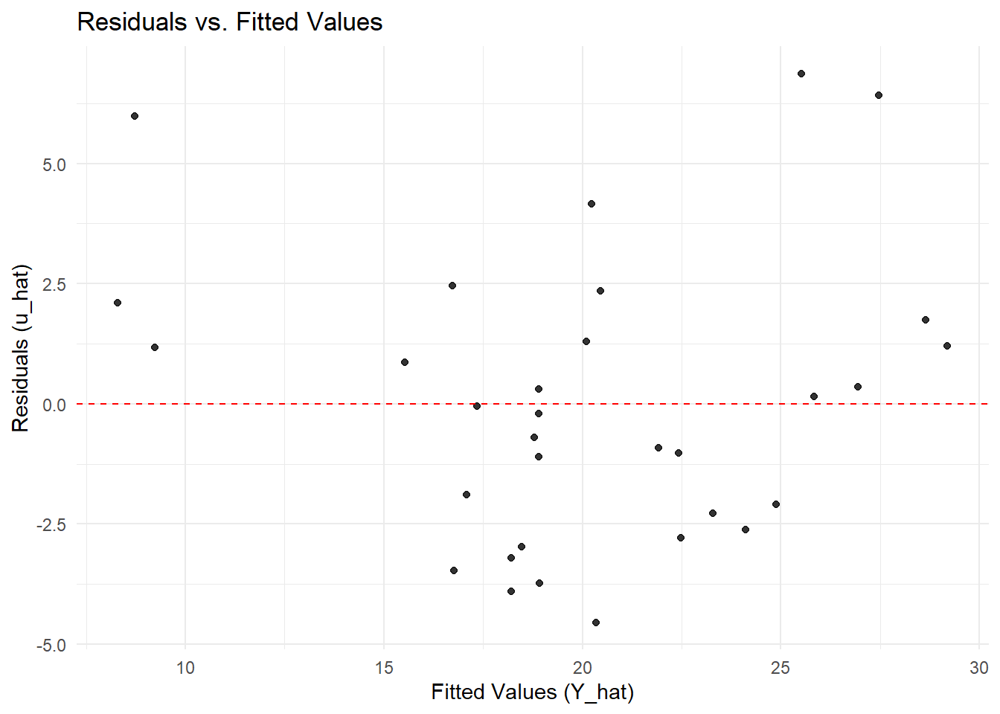

2The Classical Linear Model (Gauss-Markov) Assumptions
2.1 CLRM Assumptions
For the Ordinary Least Squares (OLS) estimators \(\hat{\alpha}\) and \(\hat{\beta}\) to have desirable properties (like being the Best Linear Unbiased Estimators, or BLUE), a set of assumptions about the population model must hold. These are the core assumptions for cross-sectional data analysis.
Given that the population model is
\[Y_i = \alpha + \beta X_i + u_i\]
Assumption 1: Conditional Mean Zero
The error term \(u\) has an expected value of zero, given any value of the explanatory variable\(X\).
\[E(u_i | X_i) = 0\]
Interpretation: This means that the explanatory variable \(X\) provides no information about the mean of the unobserved factors. On average, the positive and negative omitted effects cancel out. This is the single most important assumption.
Implication: It implies that the model is correctly specified in its functional form and that there are no omitted variables that are correlated with\(X\). If this assumption fails, our OLS estimates are biased.
Assumption 2: Homoskedasticity
The error term \(u\) has the same variance given any value of the explanatory variable.
\[Var(u_i | X_i) = \sigma^2\]
Interpretation: The variance of the unobserved factors is constant across all values of \(X\). The spread of the data points around the regression line is the same whether \(X\) is small or large.
Implication: If this holds, OLS standard errors are valid. If it fails, we have heteroskedasticity, which means OLS estimates are still unbiased but their standard errors are incorrect. This leads to faulty hypothesis tests and confidence intervals.
Assumption 3: No Autocorrelation
The error terms for any two different observations are uncorrelated.
\[Cov(u_i, u_j | X_i) = 0 \quad \text{for all } i \neq j\]
Interpretation: The unobserved factors affecting \(Y\) for one observation are not correlated with the unobserved factors affecting \(Y\) for any other observation. In cross-sectional data, this is usually guaranteed by random sampling. However autocorrelation is usually a concern for time-series data.
Implication: Like heteroskedasticity, if this assumption fails, OLS estimates remain unbiased but the standard errors are incorrect/inefficient, leading to unreliable inference.
Assumption 4: Exogeneity
The explanatory variable \(X\) is uncorrelated with the error term \(u\).
\[Cov(X_i, u_i) = 0\]
Interpretation: This is essentially a weaker version of Assumption 1. It means \(X\) is not influenced by the unobserved factors in \(u\).
Implication: This assumption is crucial especially for causal interpretation. If \(X\) is correlated with \(u\), it could mean an omitted variable that affects \(Y\) is also correlated with \(X\) (a.k.a confounding, or the “third variable” problem). This is the famous omitted variable bias, which causes \(\hat{\beta}\) to be biased and inconsistent.
Assumption 5: No Perfect Multicollinearity
Interpretation (for simple regression): In the simple regression model with one explanatory variable, this assumption is automatically satisfied as long as \(X\) is not constant.
Interpretation (for multiple regression): This assumption becomes critical when we have more than one explanatory variable. It states that no independent variable is a perfect linear combination of another independent variable(s).
2.2 The Gauss-Markov Theorem
If Assumptions 1 through 4 hold (and 5 for multiple regression), the OLS estimators \(\hat{\alpha}\) and \(\hat{\beta}\) are the Best Linear Unbiased Estimators (BLUE).
Linear: They are linear functions of the data.
Unbiased: On average, across repeated samples, they equal the true population parameters, i.e. \(E[\hat{\beta}] = \beta\).
Best: They have the smallest variance among all other linear unbiased estimators. This means they are the most precise (efficient).
This theorem is why OLS is the workhorse of econometrics—under these conditions, no other linear estimator is better.
2.2.1 Checking Assumptions
While a full diagnostic check will be done in later chapters, we’ll start by checking for non-constant variances, or heteroskedasticty.
2.2.1.1 Testing for Heteroskedasticity
Here is a quick example of how to generate residual plots whch can be useful to visually check for homoskedasticity and mean zero.
# Fit the modelmodel <-lm(mpg ~ wt, data = mtcars)# Create a dataframe of fitted values and residualsdiagnostic_data <-data.frame(fitted =fitted(model),residuals =resid(model))# Plot residuals vs. fitted valueslibrary(ggplot2)
Warning: package 'ggplot2' was built under R version 4.4.3
ggplot(diagnostic_data, aes(x = fitted, y = residuals)) +geom_point(alpha =0.8) +geom_hline(yintercept =0, linetype ="dashed", color ="red") +labs(title ="Residuals vs. Fitted Values",x ="Fitted Values (Y_hat)",y ="Residuals (u_hat)") +theme_minimal()

Interpreting the plot: We look for a random scatter of points around the red zero line. The absence of a clear pattern (e.g., a curve or a funnel) is a good sign that Assumptions 1 and 2 are plausible. In this mtcars example, there might be a slight pattern, suggesting a potential minor violation worth investigating further.
A more formal test is the White test, a general and powerful test for heteroskedasticity. It does not assume a specific form for the heteroskedasticity (e.g., that variance increases with X). The test works by regressing the squared residuals from the original model on the original explanatory variables, their squares, and their cross-products.
The null and alternative hypotheses are:
\(H_0\): Homoskedasticity exists (the error variance is constant).
\(H_1\): Heteroskedasticity exists (the error variance is not constant).
# install.packages("lmtest") # Uncomment and run if neededlibrary(lmtest)# Perform the White test for the simple model mpg ~ wtbptest(model, ~ wt +I(wt^2), data = mtcars)
studentized Breusch-Pagan test
data: model
BP = 1.3663, df = 2, p-value = 0.505
The bptest() output shows a BP test statistic and a p-value. A p-value < 0.05 means you reject the null hypothesis of homoskedasticity. In the mtcars example above, we fail to reject the null hypothesis, suggesting that we have may not have heteroskedasticty.
Alternatively:
# 1. Estimate the original simple regression modelsimple_model <-lm(mpg ~ wt, data = mtcars)# 2. Obtain the squared residuals from the modelsquared_residuals <-resid(simple_model)^2# 3. Perform the "auxiliary regression" for the White test:# Regress the squared residuals on the original regressor (wt) and its square (wt²).white_aux_model <-lm(squared_residuals ~ wt +I(wt^2), data = mtcars)# 4. Conduct an F-test on the auxiliary model.# The null hypothesis is that the coefficients on 'wt' and 'I(wt^2)' are zero.# install.packages("car") # Uncomment and run if you don't have the 'car' packagelibrary(car)linearHypothesis(white_aux_model, c("wt=0", "I(wt^2)=0"))
Linear hypothesis test:
wt = 0
I(wt^2) = 0
Model 1: restricted model
Model 2: squared_residuals ~ wt + I(wt^2)
Res.Df RSS Df Sum of Sq F Pr(>F)
1 31 4542.5
2 29 4348.6 2 193.95 0.6467 0.5312
We look at the F-statistic and its p-value (Pr(>F)). A p-value < 0.05 provides evidence to reject the null hypothesis (\(H_0\)) of homoskedasticity, thereby suggesting the error variance is not constant and depends on weight (wt). Here, again Pr(>F) is 0.5312, hence we fail to reject the null.